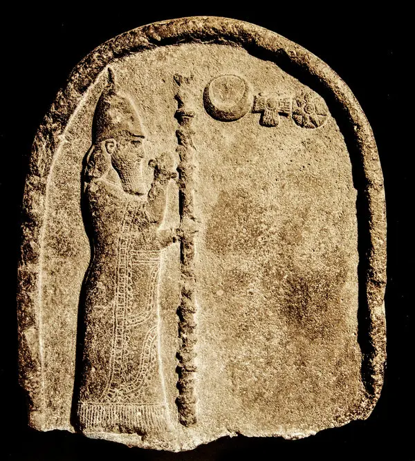

Ancient Viewings


From the dawn of mankind to right before the advent of the telescope, mankind has always looked up to the night sky at our planet's long time companion: our Moon. We've depicted it in various forms of art throughout our history as it's one of the largest and brightest objects in our skies only second to the Sun. Its brightness and size makes it influential in both our culture and minds as we continue to gaze and stare at it in awe and wonder.